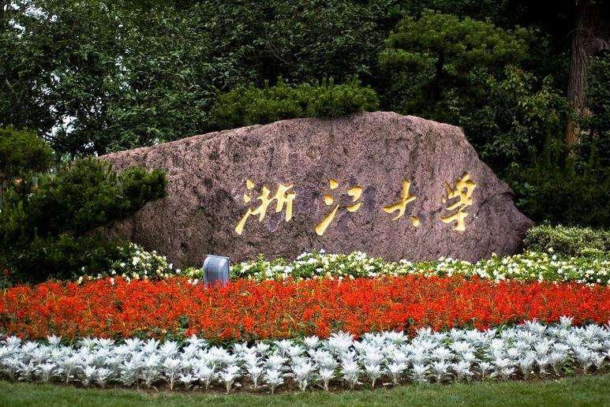

浙江大学
浙江大学（Zhejiang University），简称“浙大”，坐落于“人间天堂”杭州。前身是1897年创建的求是书院，是中国人自己最早创办的新式高等学校之一。1928年更名为国立浙江大学。中华民国时期，浙江大学在竺可桢老校长带领下，崛起为民国最高学府之一，被英国科学史家李约瑟誉为“东方剑桥”，迎来了浙大百年历史中最辉煌的时期。竺可桢老校长因其历史贡献，成为了浙大校史中最伟大的人，并为浙大确立了“求是”校训和文言文《浙江大学校歌》。
浙江大学直属于中华人民共和国教育部，是中国著名顶级学府之一，是中国“学科最齐全”、“学生创业率最高”的大学，是首批“211工程”、“985工程”、“双一流”重点建设的全国重点大学之一，是九校联盟、环太平洋大学联盟、世界大学联盟、中国大学校长联谊会成员 ，入选“珠峰计划”、“2011计划”、“111计划”，教育部首批“卓越法律人才教育培养计划”、“卓越工程师教育培养计划”、“卓越医生教育培养计划”、“卓越农林人才教育培养计划”改革试点高校。
截至2016年12月，学校有紫金港、玉泉、西溪、华家池、之江、舟山、海宁7个校区，占地面积约6398.52亩，校舍建筑面积约257.6万㎡，图书馆藏书693.5万册。学校有7个学部，36个专业学院（系），2个中外合作办学学院，7家附属医院。有一级学科国家重点学科14个，二级学科国家重点学科21个。全日制在校学生48762人，其中硕士研究生15092人，博士研究生9537人；留学生6237人，其中学位生3498人。
办学历史
求是书院时期
1897年，清光绪二十三年，求是书院（浙江大学前身）在浙江杭州建立，是中国近代史上效法西方学制最早创办的几所新式高等学校之一。
1901年，清朝统治集团迫于外界形势，不得不拟议实施“新政”，同年11月，浙江巡抚廖寿丰奏改求是书院为求是大学堂。
1902年，求是大学堂改称为浙江大学堂。
1903年12月，浙江大学堂遵《奏定学堂章程》改为浙江高等学堂。
1912年，中华民国成立，北洋政府将浙江高等学堂更名为浙江高等学校。
1927年，国民政府通过北伐战争攻克杭州，在原校址成立国立第三中山大学，校名系国民党为纪念孙中山先生而定。学校下设文理、工、劳农三个学院，其中工学院由浙江公立工业专门学校改组而成、劳农学院由浙江公立农业专门学校改组而成。
国立浙江大学时期
1928年4月1日定名为浙江大学，1928年7月1日起，校名前被国民政府冠以“国立”二字，全称国立浙江大学，简称浙江大学，下设文理、工、农三个学院。

1936年4月，蒋介石任命竺可桢为浙江大学校长，并答应了竺可桢提出的“财源须源源接济，用人校长有全权，不受国民党之干涉”的任职条件。
1937年7月7日，抗日战争全面爆发。
1937年8月13日，中日淞沪会战打响，战火很快波及浙江。浙江大学在蒋介石的指示下，在竺可桢老校长的带领下，从1937年11月开始由杭州往中国内地西迁，先后经浙、赣、湘、粤、桂、黔等六省，行程近2600多公里，于1940年初，到达贵州省遵义市湄潭县，并在遵义、湄潭、永兴等地坚持办学长达七年之久，史称“浙大西迁”。遵义湄潭也因此成为了浙大人心目中永恒的圣地和浙江大学的第二故乡。
西迁办学时期，浙江大学曾集聚了竺可桢、苏步青、陈建功、王淦昌、卢鹤绂、束星北、谈家桢、贝时璋等一批在国内外颇具盛名的科学巨人；同一时期，浙江大学还培养出后来的诺贝尔物理学奖获得者李政道和国家最高科学技术奖获得者叶笃正、谷超豪和程开甲。这些都是浙江大学西迁办学时期的代表性人物。
在中国著名气象学家、地理学家竺可桢老校长的领导下，浙江大学历经艰辛，筚路蓝缕，在西迁办学期间崛起为中华民国最高学府之一，被英国著名科学史家李约瑟称誉为“东方剑桥”，是中国科学教育史上的一次壮举和一个奇迹，史称“文军长征”。竺可桢老校长因其历史贡献，成为了浙大校史中最伟大的人，并为浙大确立了“求是”校训和文言文《浙江大学校歌》。由此，浙江大学迎来了浙大百年发展史中的第一个黄金时期，也是最辉煌的时期。
1945年9月3日，中华民国赢得了抗日战争的胜利。
1946年秋，浙江大学迁返杭州。
1948年3月底，浙江大学已拥有理、工、农、医、文、法、师范7个学院、25个系、9个研究所、1个研究室，发展成了中华民国最完整的两所综合性大学之一。
1949年5月3日，杭州宣布解放，国民党对浙江大学的领导由此宣告结束。
1949年6月6日，解放军杭州市军事管制委员会决定对浙江大学实行军事接管，并派出军代表林乎加、副军代表刘亦夫到校进行接管。
1949年10月1日，中华人民共和国成立。
1950年10月，校名前所冠的“国立”二字被新中国政府去掉。
四校分治时期
1952年，正值中苏关系蜜月期，新中国仿照苏联的高等教育模式，对全国高等学校进行院系调整，综合性的浙江大学按照苏联模式被拆分成了多所单科性大学，部分系科并入省外兄弟院校，其中留在杭州的院系拆分成了四所大学——浙江大学、杭州大学、浙江农业大学、浙江医科大学（四校于1998年再次融为一体）。
浙江大学的师范学院的全部和文学院、理学院留在杭州的部分等成立浙江师范学院，1958年更名为杭州大学。
浙江大学的农学院单独分出成立浙江农学院，1960年更名为浙江农业大学。
浙江大学的医学院等成立浙江医学院，1960年更名为浙江医科大学。
浙江大学的工学院则继续留守本校，浙大暂时从综合性大学变成了多科性的工科大学。
1957年，经高等教育部批复，浙江大学开始恢复理科专业，同年重建了数学系、物理系。
1958年，浙江大学重建了化学系。
1960年，浙江大学重建了地质系。浙江大学由此成为了全国工科大学中第一个重建理科的大学，重新走上了理工结合的办学道路，由工科大学逐渐发展为以工为主的理工科大学。
1963年9月12日，浙江大学成为了教育部直属的全国重点大学。
978年，中国共产党十一届三中全会的胜利召开，为浙江大学的复兴，提供了非常宝贵的历史机遇。从此，浙江大学获得了非常广阔的发展空间，进入了复兴的历史新时期。
1978年3月25日，中国科学院和浙江省革委会向国务院报告，决定同意将浙江大学归属中国科学院和浙江省委双重领导，以中国科学院为主。
1979年2月8日，中国科学院党组任命著名物理学家、中国科学院副院长钱三强兼任浙江大学校长。1980年11月25日，经国务院批复，浙江大学由中国科学院领导改为教育部和浙江省委双重领导，以教育部为主，仍然是全国重点高校。
1988年2月，浙江大学在路甬祥老校长的领导下，走上了飞速发展的道路，路甬祥老校长也因此成为了浙大校史中地位仅次于竺可桢的校长，并为浙大确立了“创新”校训。由此，“求是创新”被固定为浙大的校训。
1989年1月28日，经国家教委批复，浙江大学和清华大学成为了两所 浙大老校长路甬祥 浙大老校长路甬祥 综合改革试点院校。综合改革的总体目标：争取到2000年之前，把浙江大学建设成为以工为主、理工结合、设有文管、教育质量和教学研究水平稳定地全面地居于全国大学前列，在国际上有重大影响的综合性理工科大学。由此，浙江大学迎来了浙大百年发展史中的第二个黄金时期，迈出了复兴的第一步。
1995年，浙江大学成为首批7所列入国家“211工程”建设计划的全国重点大学之一。杭州大学、浙江农业大学、浙江医科大学也分别成为实力雄厚、特色鲜明，居于全国同类大学前列，在海外具有较大影响力的全国重点大学，并分别通过了“211工程”部门预审和重点建设项目立项论证。四所学校对浙江省乃至全国的经济建设和社会发展都作出了重要贡献。
新浙江大学时期
1998年9月15日，鉴于苏联高等教育模式的弊端越来越明显，以及中国对建设世界一流大学的需要，经国务院批复，曾经从浙江大学分离出去的杭州大学、浙江农业大学、浙江医科大学回归浙大母体，共同组建了新的浙江大学。至此，自1952年院系调整以来所形成的四校分治的局面结束了。浙江大学由此停止了对苏联模式的使用，恢复了1952年之前的学科设置，重新成为了综合性大学，再次走上了飞速发展的道路，并迈上了建设世界一流大学的新征程。由此，浙江大学迎来了浙大百年发展史中的第三个黄金时期，迈出了复兴的第二步。
1999年，浙江大学成为首批9所列入国家“985工程”建设计划的全国重点大学之一。
2007年1月21日，浙江大学恢复了1952年院系调整时停办的航空航天系，该系隶属于新成立的航空航天学院。
2009年上半年，浙江大学实行了学部制，全校调整为七大学部——人文学部、社会科学学部、理学部、工学部、信息学部、农业生命环境学部、医药学部。
2009年10月9日，中国的九校联盟（C9）启动，浙江大学成为联盟成员之一。
2012年6月10日，浙江大学成立了海洋学院，学院由海洋科学系和海洋工程学系组成，隶属于工学部，位于浙大新成立的舟山校区。
2013年5月15日，浙江大学与英国帝国理工学院就建立联合学院事宜签署了“浙江大学——帝国理工联合学院合作谅解备忘录”，浙江大学成为中国首个在世界名校建立海外校区的高校。
2014年5月4日，国家主席习近平在北京大学师生座谈会上讲到：“办好中国的世界一流大学，必须有中国特色。世界上不会有第二个哈佛、牛津、斯坦福、麻省理工、剑桥，但会有第一个北大、清华、浙大、复旦、南大等中国著名学府。”由此，浙江大学立志扎根中国大地，坚定不移地推进“中国特色”世界一流大学的建设。
2017年9月，浙江大学入选国家“双一流”（世界一流大学和一流学科）建设高校。
source:https://baike.baidu.com/item/%E6%B5%99%E6%B1%9F%E5%A4%A7%E5%AD%A6/127901?fr=aladdin#1